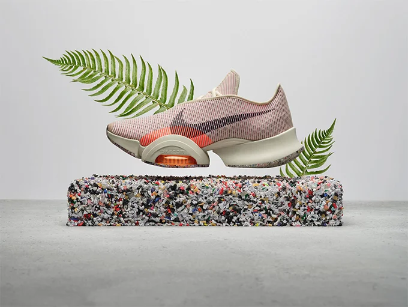

The Future of Footwear Technology
Footwear has gotten to a point where it is more advanced than ever before but as explored previously, continues to change as new materials, design tools, and data-driven insights shape what shoes can do. Today’s current market includes everything from performance running shoes with carbon plates to sustainable shoes made from plant based materials. At the same time, companies are actively using digital design methods, as well as, artificial intelligence to rethink how shoes should fit, function, and improve one’s health. While there are many out there that still choose shoes based on comfort or style, footwear developers are constantly focusing and searching for the next big idea. Particular brands such as Nike, Adidas, and emerging tech-focused companies are doing their best to innovate and continue to move this industry forward. Nike’s Advanced Innovation team currently studies how different materials affect one's movement patterns and how athletes respond to new forms of support. Adidas is continuing to work on 3D printing and incorporate sustainable materials with designers who are looking to blend ecology with sports engineering. Although these two possess the most resources they’re not the only two with innovative ideas as smaller companies like On and Hoka are experimenting with new foam structures which are able to change how the foot interacts with the ground. Together, these developers are shaping two possible futures for footwear and its user. One features personalized and digitally crafted shoes while the other looks to produce sustainable shoes designs to reduce environmental impact.
Future One: Personalized and Digitally Designed Footwear
The first major direction we see footwear companies moving towards is a future focused around personalization. Developers are using tools like a 3D foot scan, motion analysis, and AI to create shoes tailored to an individual's unique foot shape and movement patterns. Adidas has already released a product in this sector with a limited 3D printed midsole, and Nike has used motion capture labs in order to study how different athletes might land, push off, or absorb force. In the end the goal is to create shoes that do more than fit a person size, but the actual science of how their body moves. This is a significant step forward technologically because it moves footwear from a mass produced model to one that is more data driven. Instead of building an average shoe meant to fit millions, designers would be able to use a scan of a person's foot to create a unique product which could support a single person's arch and pressure points. For runners this could also help reduce injury risk. For everyday consumers, it could mean shoes which wouldn’t cause soreness or long term joint issues. In terms of social implications, the expected impact is significant. People with medical needs as well as unique foot shapes would benefit the most because they often struggle to find footwear that fits them comfortably. Economically the introduction of personalized shoes would likely cost more at first, meaning they’d primarily be sold to serious athletes or people willing to pay a premium. But as technology becomes cheaper, personalized footwear could become far more common. Some brands even predict that widespread availability of custom shoes could become realistic sometime within the next decade.

Future Two: Sustainable Footwear
The second major direction footwear is taking centers around sustainability. Footwear production creates large amounts of waste and most shoes produced today cannot be recycled since they’re constructed using glued materials. Developers are now working to design shoes that can be reused or broken down without harming the environment. Adidas’s recyclable running shoes along with Nike’s “Move to Zero” are examples of this early initiative being taken. Technologically, this idea requires the rethinking of how shoes are built. Instead of the traditional foam, glue, and fabric, designers are using a single material, plant based foams, or biodegradable fabrics. Some companies are also exploring mushroom leather or algae based soles to reduce environmental impact. For this alteration to the industry the cultural and economic impact have the potential to be very significant. Consumers now more than ever seem to be paying more attention to sustainability which could lead to the widespread sales of these shoes. Companies may also gain economic advantages as environmental regulations tighten.

Closing Thoughts
The future of footwear is currently being shaped by two major paths in personalization and sustainability. Personalized shoes reflect advantages in buyer health and digital design, while sustainable shoes respond to the growing concerns on waste and environmental impact. Overall, I think these developments are both very positive. Personalized shoes can improve comfort and reduce injury, while sustainable designs are necessary for the long-term health of our plant. As long as companies continue to work to make these technologies accessible, the next stages of footwear innovation have potential to improve both performance and daily life.